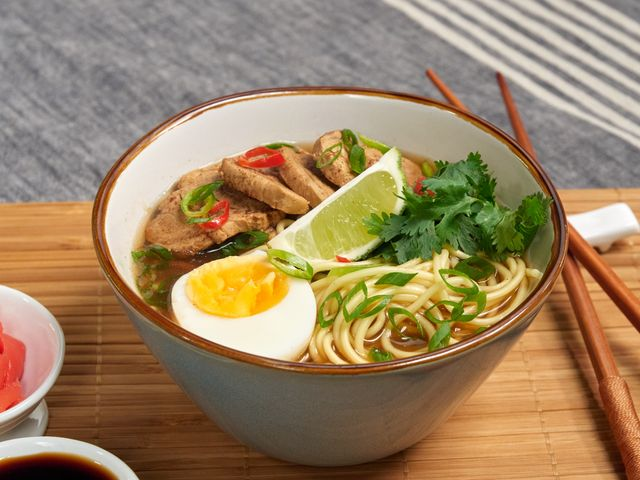

Что такое рамен?
Рамен - это японский суп с пшеничной лапшой, который стал невероятно популярен во всем мире. У него богатый вкусный бульон и много разных добавок.

Основные компоненты рамена
Настоящий рамен состоит из нескольких важных частей:
- Бульон - может быть свиным, куриным, рыбным или овощным
- Лапша - специальная пшеничная лапша для рамена
- Таре - соевая паста, которая добавляет основной вкус
- Топпинги - различные добавки сверху

Виды рамена
В Японии есть несколько основных видов рамена, которые отличаются по типу бульона:
- Шою - на соевом соусе, самый популярный
- Мисо - с пастой мисо, родом из Хоккайдо
- Сио - соленый, с прозрачным бульоном
Если вы хотите попробовать приготовить рамен дома:
- Начните с простого куриного бульона
- Не экономьте на времени приготовления бульона
- Обязательно попробуйте добавить яйцо, приготовленное всмятку
- Экспериментируйте с разными топпингами
Рамен - это прекрасное блюдо для холодных дней. Он согревает и дарит ощущение комфорта!